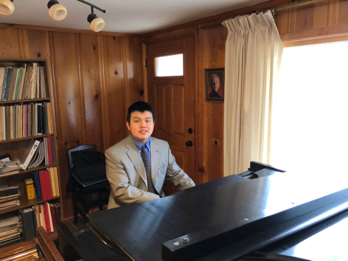

Hello! This page is to give you the opportunity to read about who I am. Enjoy!
Hi everyone! My name is Brian Jiang. I am from Columbia, Missouri. I have graduated from Rock Bridge High School in Spring 2018. I am a senior at Mizzou studying Information Technology expecting to graduate in the spring or summer of 2022. I have earned experience in customer service, Linux, Amazon Web Services, and Python. I have gotten some previous web design language experience from the Information Technology Web Application Development course. I would like to pursue a career in cybersecurity or system administration after I finish college. I am hard-working and motivated to learn new things as I dive into the real world.
I’m currently working as a teaching assistant and a student IT position. I enjoy assisting people with concepts regarding computer security along with issues related to system errors. I have earned an outstanding junior student award in March 2021, along with the cyber security and web/mobile application certificates. This semester, I am finishing up the Information Systems/Technology Certificate by taking this course.
